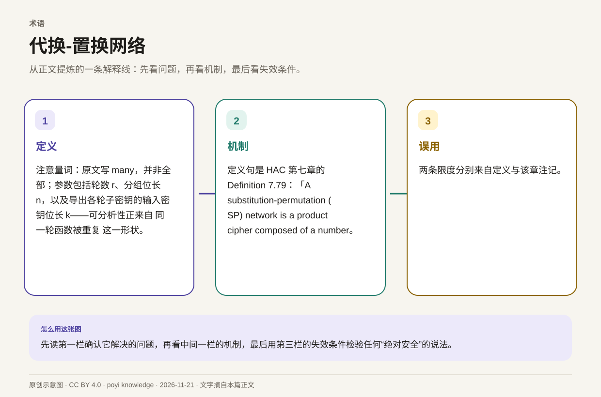

原理与机制
术语：代换-置换网络（Substitution-Permutation Network (SPN)）。定义句是 HAC 第七章的 Definition 7.79：「A substitution-permutation (SP) network is a product cipher composed of a number of stages each involving substitutions and permutations (Figure 7.7).」要点在每个阶段同时做两类事：既不是先全部代换再全部置换，也不是一种新的单表替换；它是积密码的一种形状，图 7.7 给框图，该条目只按散文定义叙述。

为什么重要
为什么要与迭代结构一起读：该定义之后紧接一句说许多 SP 网络都是 Definition 7.80 意义上的迭代密码，而 7.80 是「An iterated block cipher is a block cipher involving the sequential repetition of an internal function called a round function.」。注意量词：原文写 many，并非全部；参数包括轮数 r、分组位长 n，以及导出各轮子密钥的输入密钥位长 k——可分析性正来自同一轮函数被重复这一形状。
应用与实例
该章写出的 SP 网络实例是 SAFER：7.7 节在讲 SAFER 时写下「SAFER may be viewed as an SP network (Definition 7.79).」；对照之下，7.4.2 节明写 DES 是 Feistel 密码，同段还指出 SAFER 的加密与解密运算不同。留存件没有把任何标准或规范名与 SP 网络绑定——限度条目处理的是结构要求，不是标准身份。
边界与攻击面
两条限度分别来自定义与该章注记。其一是对可逆的要求：迭代密码的 Definition 7.80 规定「For invertibility (allowing unique decryption), for each value Ki the round function is a bijection on the round input.」这是对迭代密码的一般要求，SPN 只是其中常被迭代使用的一族。其二在注记节的对照：Feistel、Notz 与 Smith 既讨论抽象 Feistel 结构（并建议配合不可逆的 S 盒使用），也讨论基于可逆（彼此不同）S 盒的 SP 网络——两类结构对盒的可逆性要求不同，这一点是注记写出的，而不是 Definition 7.81 本身。
历史与背景
版本事实：留存件首行说明它是《Handbook of Applied Cryptography》（Menezes、van Oorschot、Vanstone，CRC Press, 1996）的一章，章页标题即 Block Ciphers。注记节对这一结构的史学叙述是有限的：它把抽象 Feistel 结构与基于可逆 S 盒的 SP 网络的讨论归给 Feistel、Notz 与 Smith 的文献，并把单输入位改变引发的多轮雪崩效应后续工作归给 Kam 与 Davida（就 SP 网络与具有完备性性质的 S 盒而言）；两处都没有给出年份。该条目因此不写发明年，只写该手册把哪些讨论记在哪些文献名下。
逐步示例与核验
定义检查模型
上位概念 → 区别特征 → 正例 → 反例 → 易混边界。正例必须落在外延内；反例必须刚好跨过边界；同义词不能代替定义。
参考出处
- Wikipedia search entry for 代换-置换网络. https://zh.wikipedia.org/w/index.php?search=%E4%BB%A3%E6%8D%A2-%E7%BD%AE%E6%8D%A2%E7%BD%91%E7%BB%9C
- RFC 4949: Internet Security Glossary, Version 2. https://www.rfc-editor.org/rfc/rfc4949